A short guide to logging in, setting up, and running your business day to day.
Prosper BMS keeps track of your stock and your money across your Restaurant, Canteen, and Store — automatically, every day. You will always know what stock you have, what cash and M-Pesa you should have, and what your business made, without doing the maths yourself.
This guide gets you set up and shows you what to expect on a normal day. It takes about fifteen minutes to read.
You sign in with a name and a 4-digit PIN — not an email address or password.
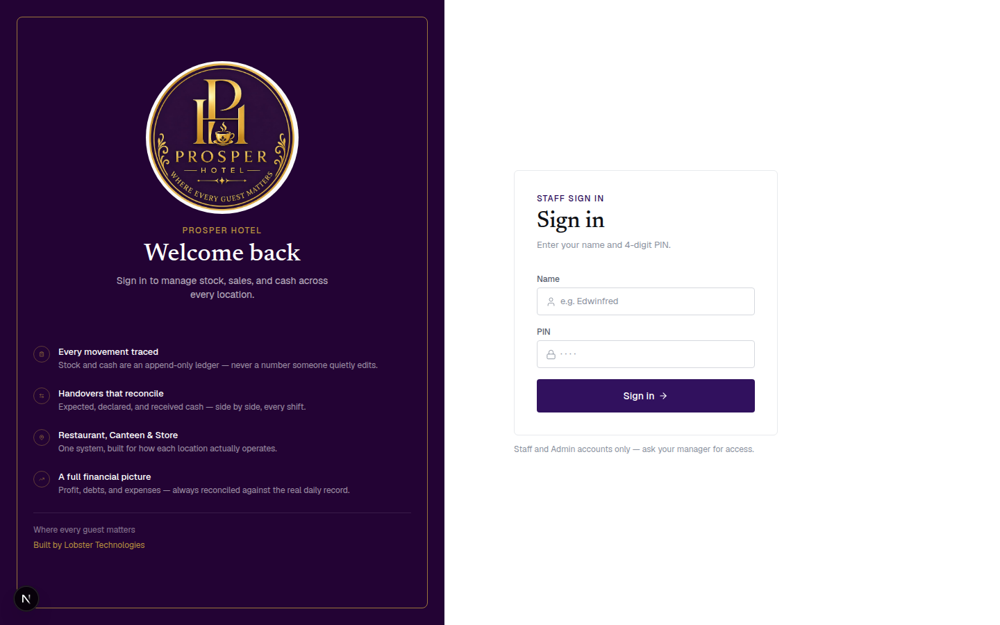
To change your PIN: go to Staff in the menu, then tap Your account at the top of the list.
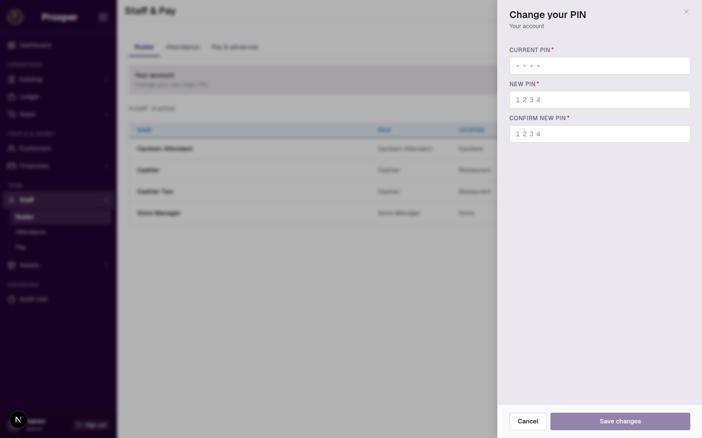
These three ideas explain almost everything you will see in Prosper BMS. Read them once and the rest of the app will make sense.
Your Restaurant, Canteen, and Store each keep their own stock and their own prices. Moving stock from one to another is always recorded as a transfer, so nothing goes missing between them.
If a figure was entered wrong, you can correct it. Open the day it happened, tap the number, and enter the right one. Your totals update straight away.
At the end of each shift, your staff tell Prosper BMS how much cash and M-Pesa they collected. You confirm what you actually received. Once everything for a day is confirmed, you close that day.
Do these steps once, in order, before your first real day of business.
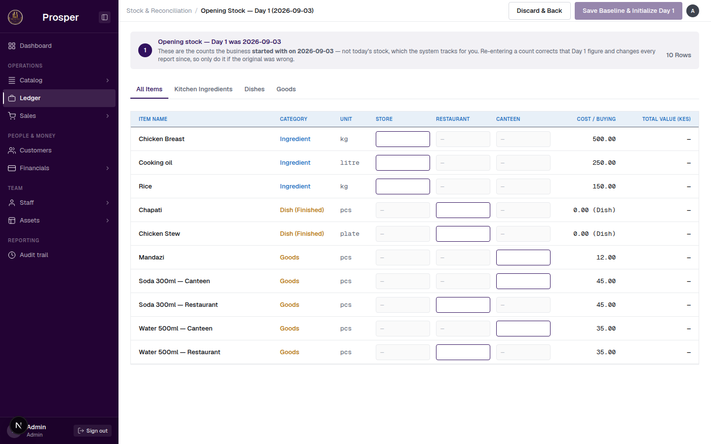
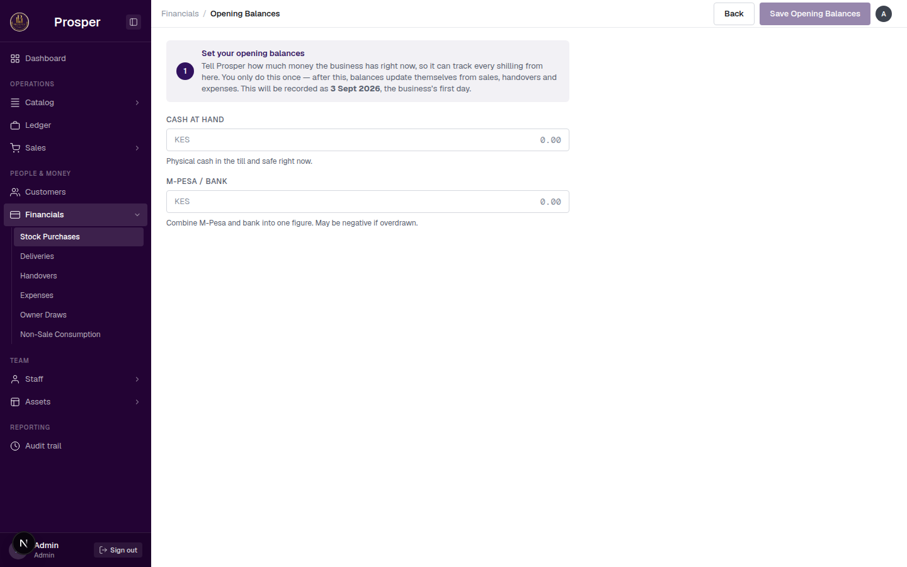
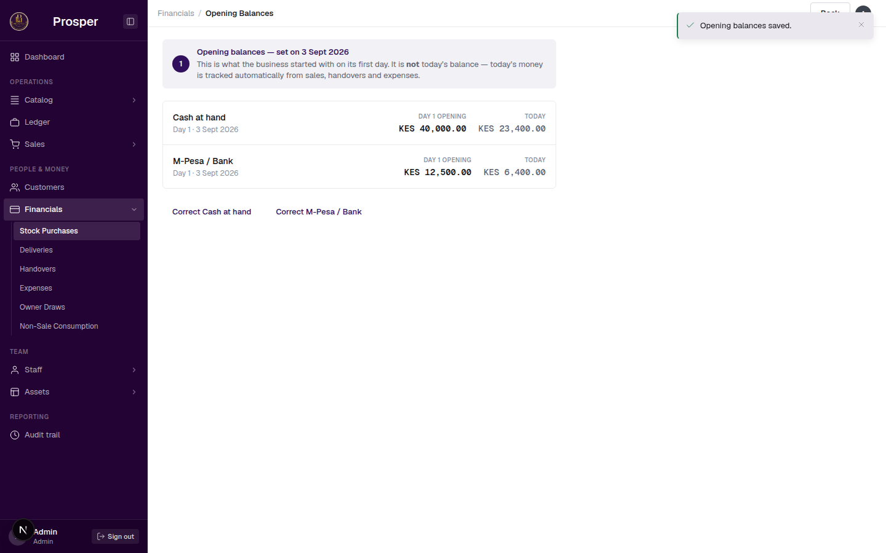
Your dashboard is the first thing you see when you sign in. It's your morning check — a two-minute look before you start the day.
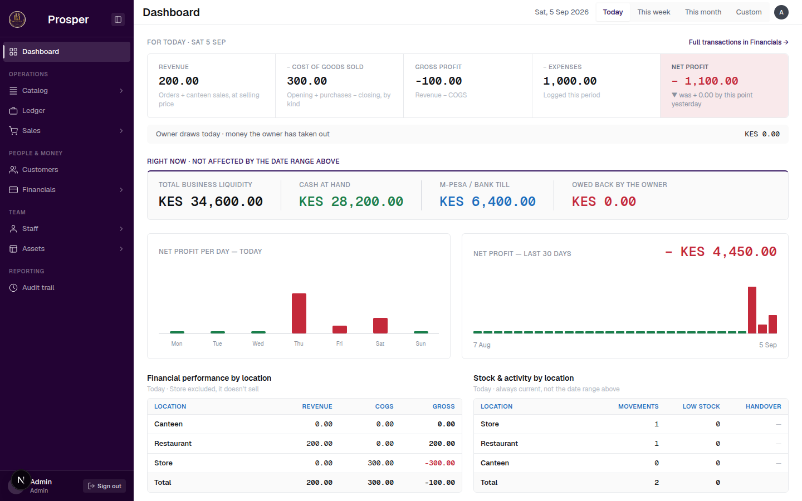
Open Ledger from the menu — the page is titled Stock & Reconciliation — to see what's on hand at every location, and every change that got it there.
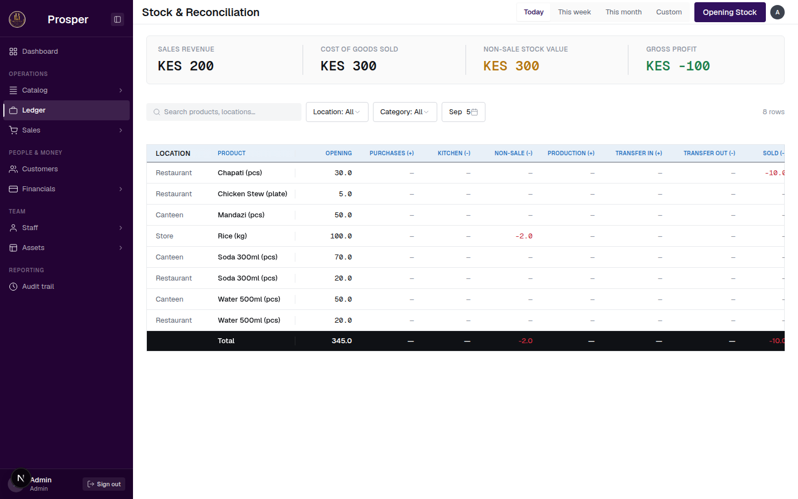
Go to Catalog to add new products, change prices, or set up a new location.
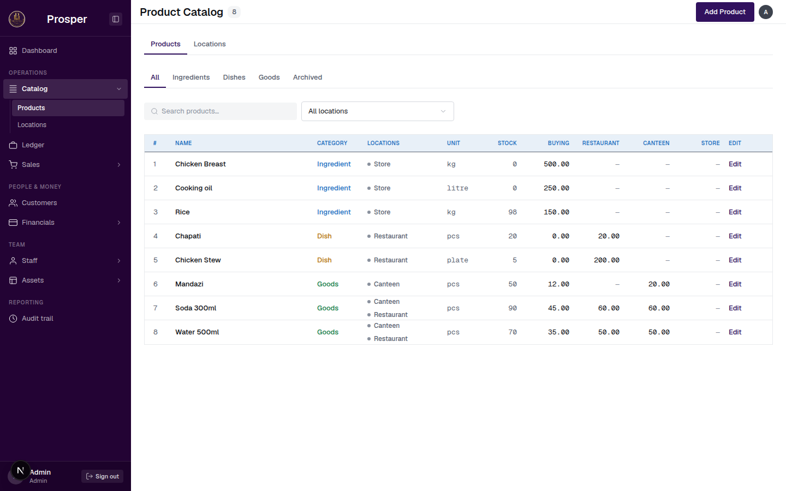
Go to Financials for stock purchases, deliveries, expenses, owner withdrawals, and handovers — all in one place, organised into tabs.
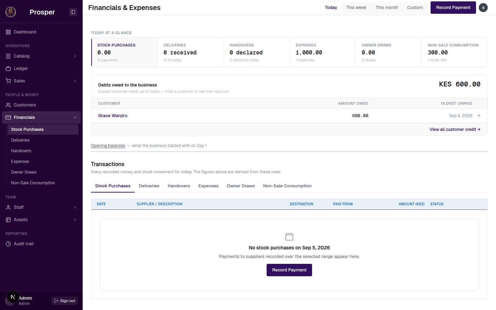
Go to Customers to see who owes you money and record when they pay it back.
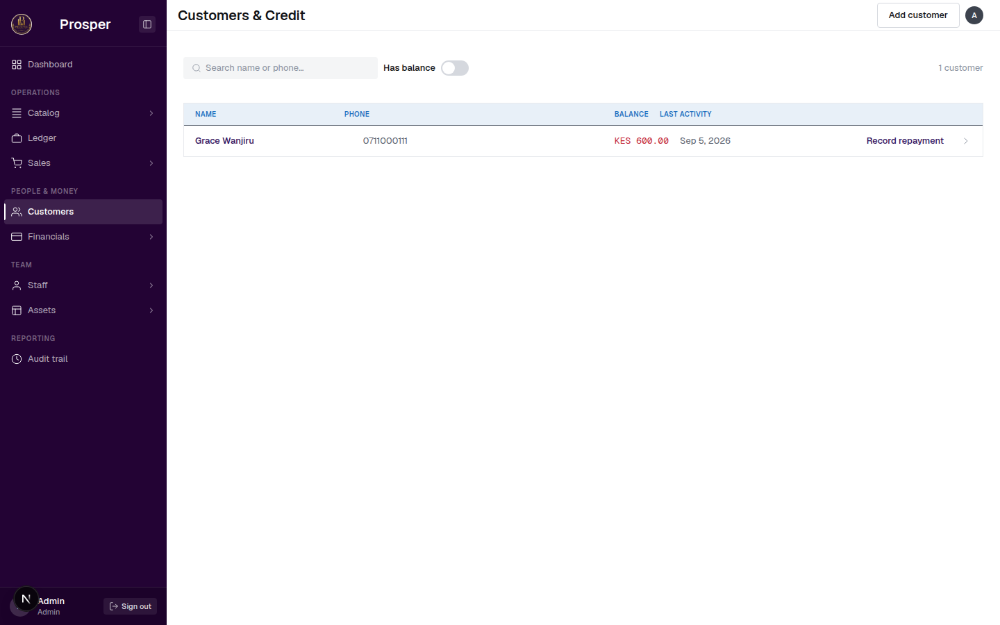
Go to Staff to manage your roster, mark attendance, and pay your team.
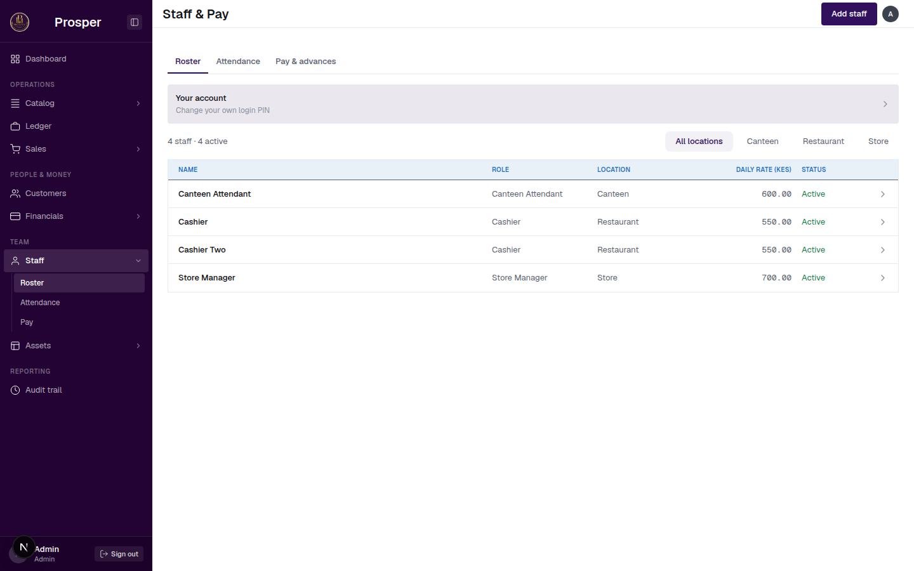
At the end of each shift, your staff declare the cash and M-Pesa they collected. You then confirm what you actually received before closing the day.
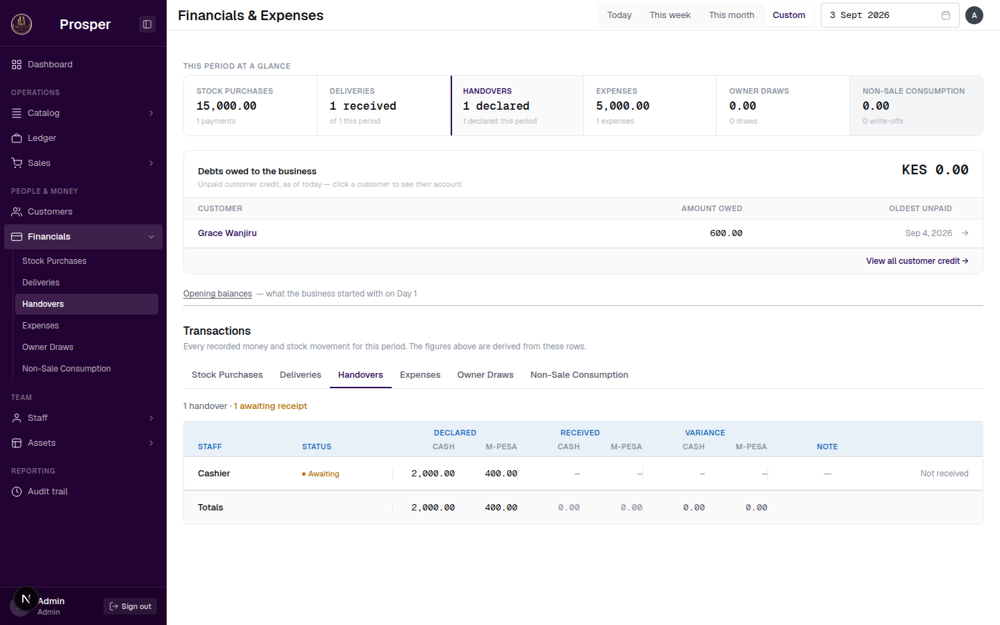
If what you received doesn't match what was declared, Prosper BMS shows you the difference so you can follow up before the day is closed. Once every handover for a day is confirmed, close that day from your dashboard.
Your staff each get a simpler screen built for their job. You don't need to operate these yourself — this is just so you know what they're doing.
Receives deliveries, issues ingredients to the kitchen, records what was made, and transfers stock to the Canteen.
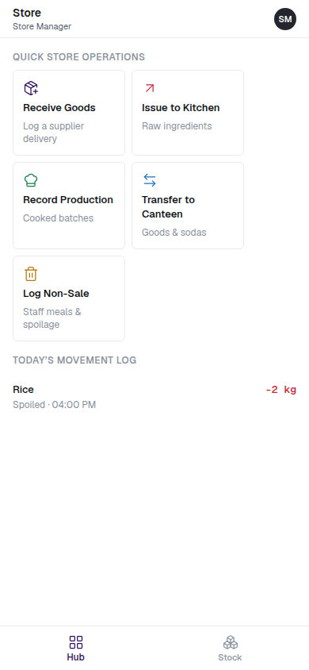
Records orders and payments through the day, then declares cash and M-Pesa at the end of their shift.
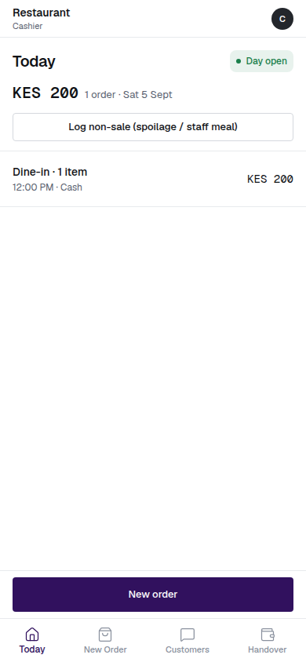
Receives deliveries, counts stock at the end of the day — which tells Prosper BMS what sold — and declares their handover.
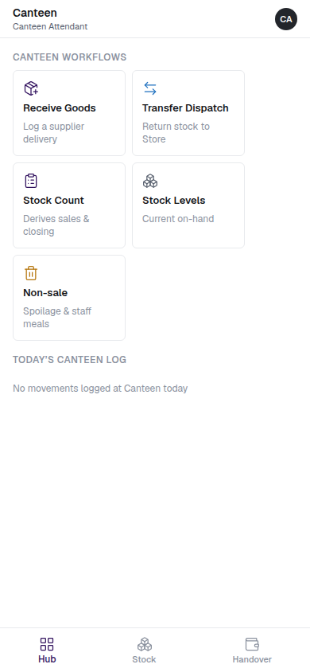
If a figure was entered wrong — a delivery counted short, an issue logged twice — you can fix it yourself from the table.
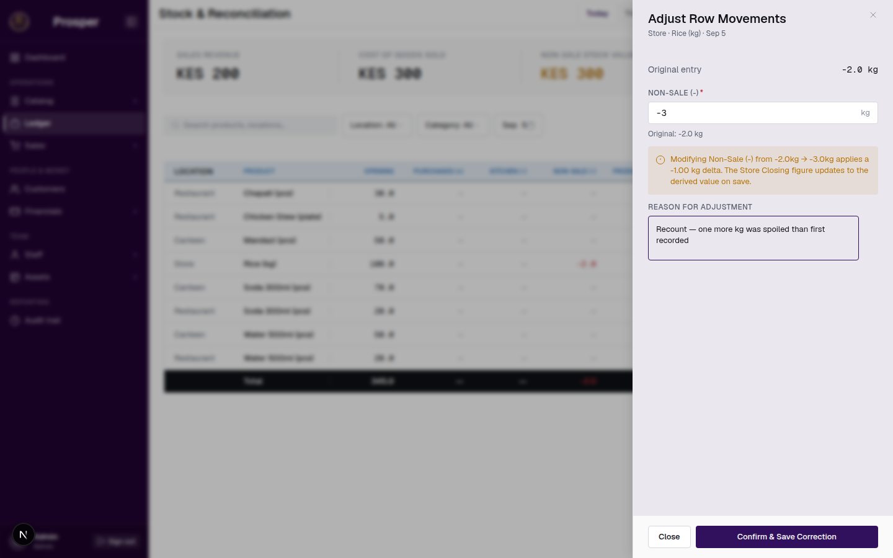
Enter what the figure should be, not the difference. Your stock levels and totals update straight away.
If the cash or M-Pesa figure you entered on Day 1 was wrong, open Financials, then Opening Balances, and tap Correct Cash at hand or Correct M-Pesa / Bank.
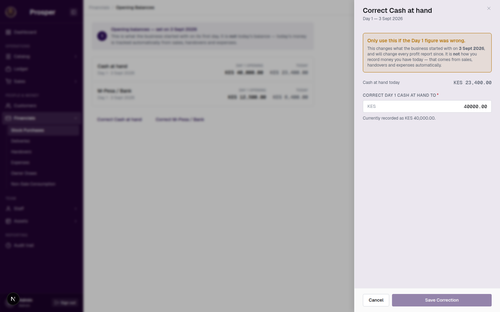
| Location | Restaurant, Canteen, or Store — each with its own stock and prices. |
| Correction | Fixing a figure that was entered wrong. Tap the number in the table and enter the right one. |
| Handover | The cash and M-Pesa a staff member declares at the end of their shift. |
| Closing the day | Sealing a business day once every handover is confirmed. |
| Day 1 / starting balance | What your business had in stock and cash the day you started using Prosper BMS. Set once. |
| PIN | Your 4-digit code to sign in — set your own after your first login. |